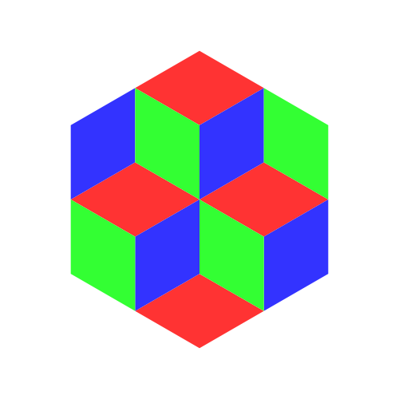
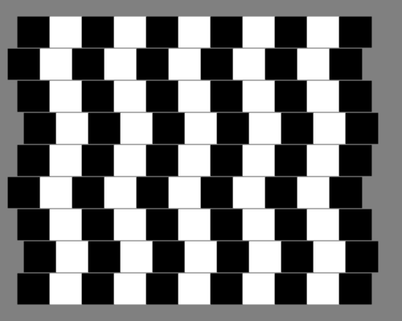

Optical Illusions with Context Free Art
Context Free Art is a program to generate images using context free grammar. We can obtain beautiful images by writing a few tens of lines of code.
To make it more interesting, let's write code for Optical Illusions. There's a nice list already done using LaTeX, below are translations and output of some of those.
CFDG uses startshape to know which shape to call first. Then the startshape can use other shapes or paths (primitive symbols, user defined).
Read the documentation for details and examples.

Illusion 1

Illusion 2
Output of illusions three, four, and five are shown below

Illusion 3

Illusion 4

Illusion 5
These examples only used simple loops, more complicated shapes can be drawn using recursion. Check out the CFDG gallery for more examples.